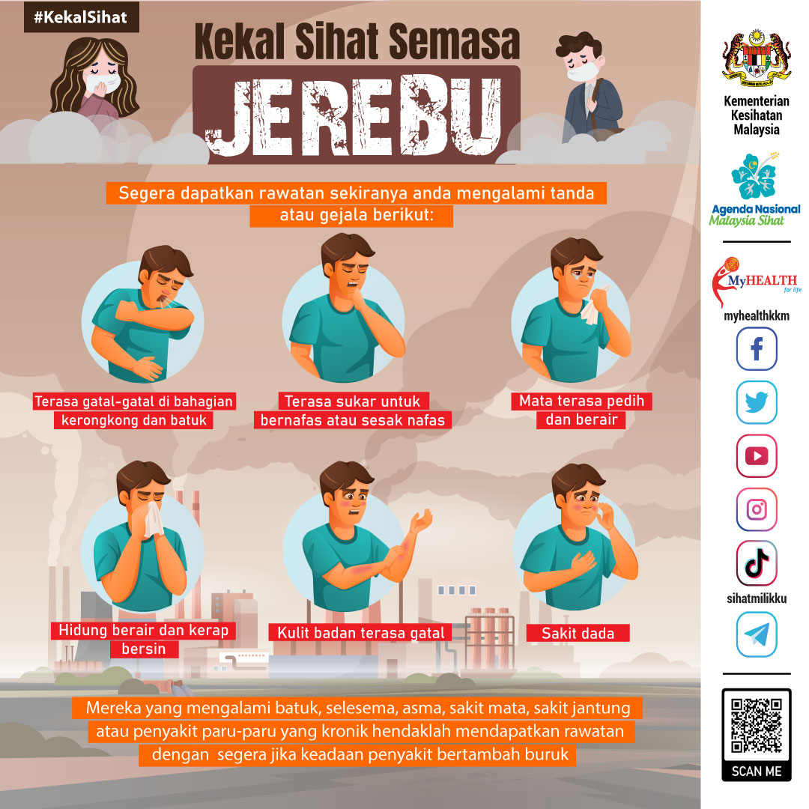

NIGHT
00:00:00
Semak Status Giliran Anda.

Loading AI...
⚠️ Sekiranya alarm kebakaran diaktifkan, jangan cemas dan ikuti arahan petugas kami. Utamakan Orang Kurang Upaya (OKU), warga emas, ibu mengandung dan kanak-kanak.